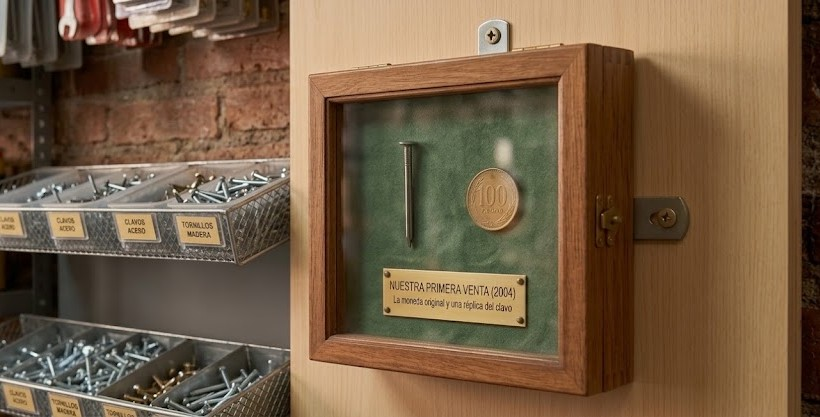
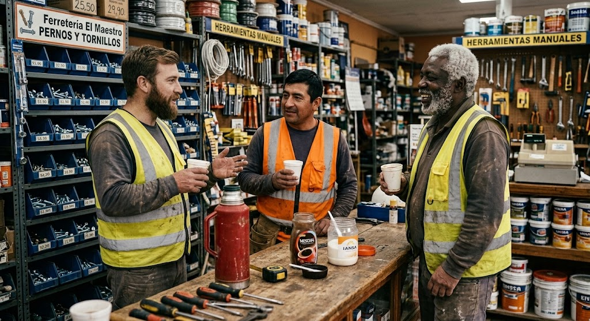

Noticias Importantes
Curiosidad #1: El primer clavo
Descubre la historia del primer clavo que vendimos hace 22 años, una reliquia que aún conservamos en nuestra vitrina.

La reliquia que inició todo
Corría el año 2004 cuando abrimos nuestras puertas por primera vez. Nuestro primer cliente no fue un gran contratista, sino Doña Rosa, una vecina que necesitaba un solo clavo para colgar un cuadro. Ese clavo fue nuestro primer producto vendido. Hoy, conservamos la moneda con la que pagó y una réplica de ese clavo como símbolo de que en Ferretería Los Maestros, todo proyecto, por más pequeño que sea, es importante para nosotros.
Curiosidad #2: El Supervisor de cuatro patas
Descubre la historia de Tuerca, el perrito que llegó buscando refugio y se convirtió en parte de nuestra historia.

El empleado más fiel
Si nos visitaste hace algunos años, probablemente fuiste recibido por "Tuerca", un perrito mestizo que un día entró al local huyendo de la lluvia y decidió que este sería su nuevo hogar. Rápidamente se convirtió en nuestro supervisor de seguridad y saludaba moviendo la cola a cada vecino que entraba. Aunque Tuerca ya descansa, en su honor siempre mantenemos un pocillo con agua fresca en la entrada para todas las mascotas que acompañan a sus dueños a comprar sus herramientas.
Curiosidad #3: El café de las 8:00 AM
Descubre el origen de nuestra tradición más querida.

Donde se planean las mejores obras
En Ferretería Los Maestros nos tomamos muy en serio nuestro nombre y nuestra relación con los clientes. Hace unos años, notamos que los contratistas que llegaban apenas abríamos se quedaban conversando en el pasillo de gasfitería. Así que decidimos poner un pequeño termo con café de cortesía. Lo que empezó como un detalle para capear el frío matutino de La Serena, se convirtió en una tradición. Hoy, ese pequeño rincón es el "centro de reuniones" no oficial donde muchos maestros del barrio se conocen y terminan trabajando juntos en grandes proyectos.